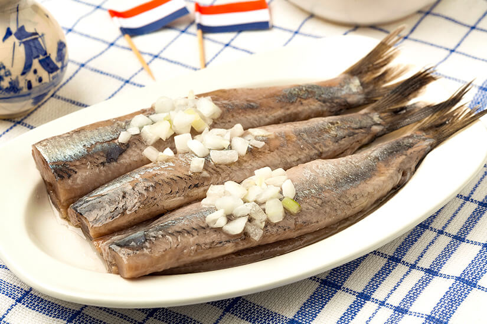
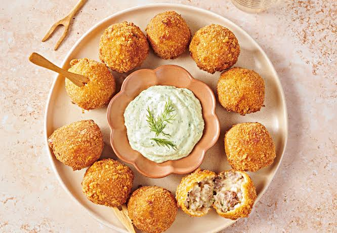
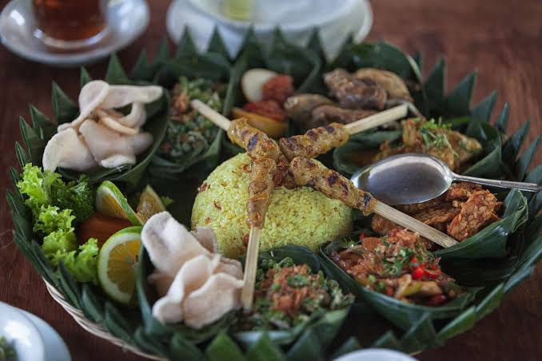
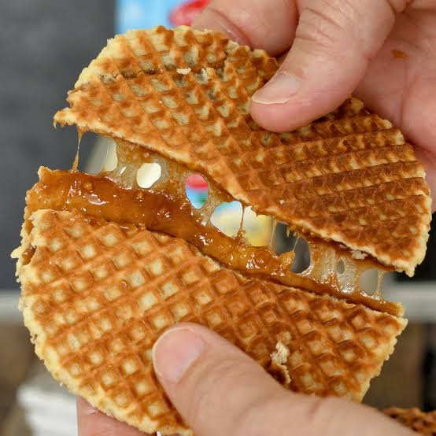
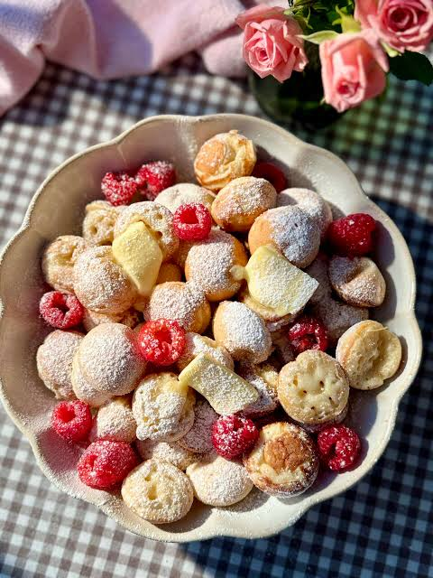
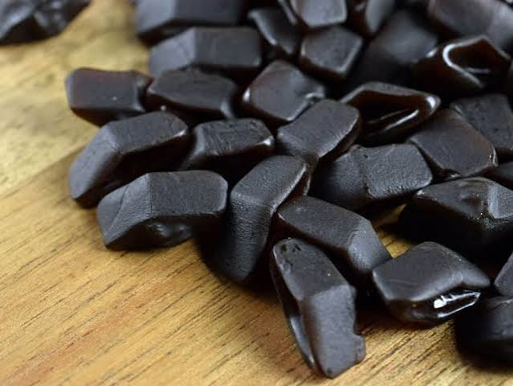

Amsterdam
Die Stadt der Grachten
Kulinarisches aus Amsterdam
Die niederländische Küche ist einfach und herzhaft. Weil Amsterdam eine Hafenstadt ist, gibt es viel Fisch und Einflüsse aus anderen Ländern.
Herzhaft
Haring

Roher, leicht gesalzener Hering. Man isst ihn klassisch mit Zwiebeln und Gurke, oft direkt am Imbissstand.
Tipp: Der "Hollandse Nieuwe" gibt es von Mai bis Juli.
Bitterballen

Frittierte Kugeln mit einem cremigen Fleischragout innen. Sie werden mit scharfem Senf als Snack zum Bier serviert.
Patatje oorlog

Pommes mit Mayonnaise, Erdnusssoße und Zwiebeln. Der Name bedeutet "Pommes Krieg".
Rijsttafel

Viele kleine indonesische Gerichte mit Reis. Die Speise kam durch die Kolonialzeit in die Niederlande.
Süßes
Stroopwafel

Zwei dünne Waffeln mit Karamellsirup dazwischen. Am besten legt man sie kurz auf eine heiße Tasse Kaffee.
Poffertjes

Kleine, runde Mini-Pfannkuchen mit Puderzucker und Butter.
Drop

Salzige oder süße Lakritze, die in den Niederlanden sehr beliebt ist.
Käse und Getränke
Käse wird vor allem aus Kuhmilch hergestellt. Berühmte Sorten sind Gouda und Edamer. In vielen Geschäften darf man vor dem Kauf probieren.
| Name | Art | Beschreibung |
|---|---|---|
| Gouda | Käse | jung mild, alt kräftig und körnig |
| Edamer | Käse | mild, bekannt durch die rote Wachsschicht |
| Heineken | Bier | 1864 in Amsterdam gegründet |
| Jenever | Spirituose | Wacholderschnaps, Vorläufer des Gins |
Märkte
- Albert-Cuyp-Markt: der bekannteste Straßenmarkt mit Essen, Obst und Kleidung
- Noordermarkt: Bio- und Trödelmarkt
- Bloemenmarkt: schwimmender Blumenmarkt mit Tulpenzwiebeln